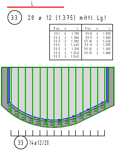
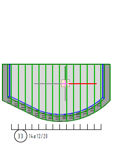
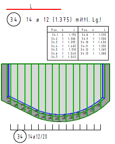

")
An Voutenverlegungen können keine Änderungen vorgenommen werden, solange Duplikate bestehen. Dazu zählen Kopien der Voutenverlegung oder Darstellungen als Form oder Durchmesser im Schnitt. Entflechten Sie zunächst die zu ändernde Voutenverlegung, um Anpassungen vornehmen zu können.
So wird's gemacht:
§Klicken Sie eine Linie der Voutenverlegung an. [Welche Voute (anklicken)].
Eine Kopie der Auszugsform wird als Rahmen an den Cursor gehängt (mit Tabelle, sofern eine zur Voute gehört).
§Setzen Sie den Auszug per Mausklick an der gewünschten Stelle ab. [Lage].
Die Positionsnummer wird automatisch hochgezählt.
 |
 |
 |
Tabelle verkleinert dargestellt. |
Voutenstab anklicken. |
Auszug und Tabelle neu platzieren. |